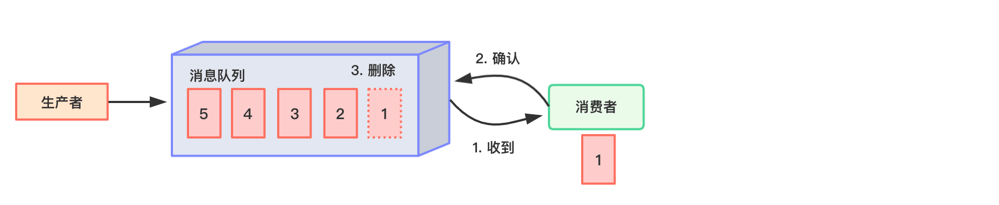
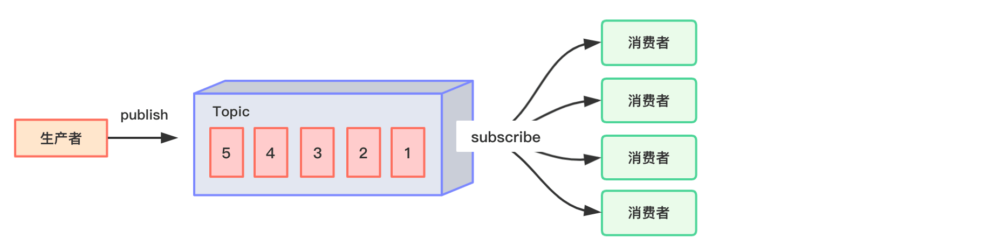
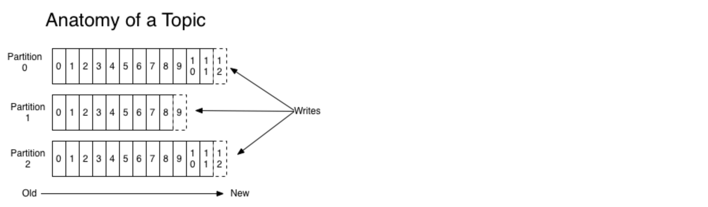
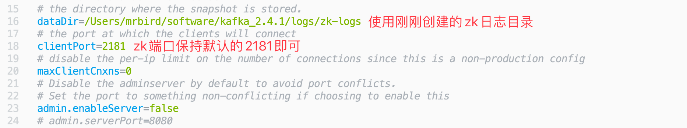
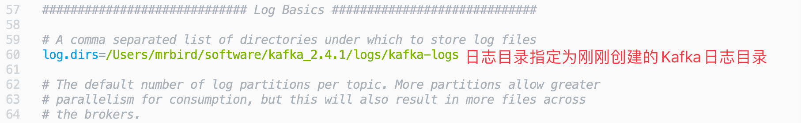
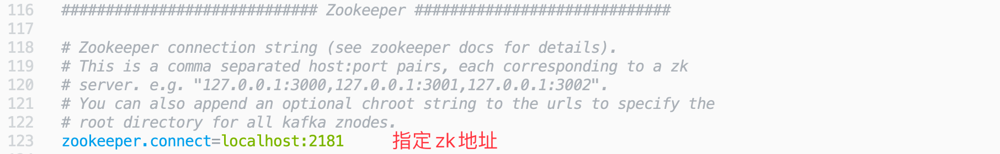
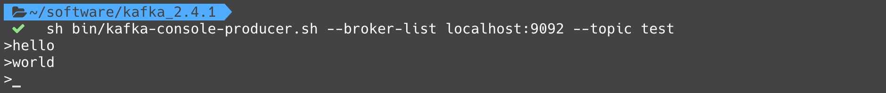
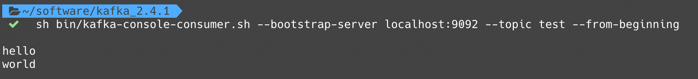

Kafka是一个分布式的基于发布/订阅模式的消息队列（Message Queue），主要应用于大数据实时处理领域。
消息队列模式
- 点对点模式（一对一，消费者主动拉取数据，消息收到后消息清除）。
消息生产者生产消息发送到Queue中，然后消息消费者从Queue中取出并且消费消息。 消息被消费以后，queue 中不再有存储，所以消息消费者不可能消费到已经被消费的消息。 Queue 支持存在多个消费者，但是对一个消息而言，只会有一个消费者可以消费。

- 发布/订阅模式（一对多，消费者消费数据之后不会清除消息）。
消息生产者（发布）将消息发布到 topic 中，同时有多个消息消费者（订阅）消费该消息。和点对点方式不同，发布到 topic 的消息会被所有订阅者消费。

Kafka属于第2种模式。
Kafka架构

- Producer ：消息生产者，就是向 kafka broker 发消息的客户端；
- Consumer ：消息消费者，向 kafka broker 取消息的客户端；
- Consumer Group （CG）：消费者组，由多个 consumer 组成。消费者组内每个消费者负责消费不同分区的数据，一个分区只能由消费者组中的一个消费者消费；消费者组之间互不影响。所有的消费者都属于某个消费者组，即消费者组是逻辑上的一个订阅者；
- Broker ：一台 kafka 服务器就是一个 broker。一个集群由多个 broker 组成。一个 broker可以容纳多个topic；
- Topic ：可以理解为一个队列，生产者和消费者面向的都是一个 topic；
- Partition：为了实现扩展性，一个非常大的 topic 可以分布到多个 broker（即服务器）上，一个 topic 可以分为多个 partition，每个 partition 是一个有序的队列；
- Replica：副本，为保证集群中的某个节点发生故障时，该节点上的 partition 数据不丢失，且 kafka 仍然能够继续工作，kafka提供了副本机制，一个 topic 的每个分区都有若干个副本，一个 leader 和若干个 follower。
- leader：每个分区多个副本的“主”，生产者发送数据的对象，以及消费者消费数据的对象都是 leader。
- follower：每个分区多个副本中的“从”，实时从 leader 中同步数据，保持和 leader 数据的同步。leader 发生故障时，某个 follower 会成为新的follower。
对于每一个topic， Kafka集群都会维持一个分区日志，如下所示：

每个分区都是有序且顺序不可变的记录集，并且不断地追加到结构化的commit log文件。分区中的每一个记录都会分配一个id号来表示顺序，我们称之为offset，offset用来唯一的标识分区中每一条记录。
Kafka每个分区的数据是严格有序的，但多分区之间不能确保有序。
安装与启动
演示在unix环境下安装与启动Kafka。Kafka下载地址：http://kafka.apache.org/downloads，选择二进制文件下载（Binary downloads），然后解压即可。
Kafka的配置文件位于config目录下，因为Kafka集成了Zookeeper，所以config目录下除了有Kafka的配置文件server.properties外，还可以看到一个Zookeeper配置文件zookeeper.properties。
在启动Kafka和Zookeeper之前，我们先在Kafka解压目录下创建如下两个日志目录：
1 | mkdir /Users/mrbird/software/kafka_2.4.1/logs/kafka-logs mkdir /Users/mrbird/software/kafka_2.4.1/logs/zk-logs |
分别用于存放Kafka和Zookeeper日志。
修改config/zookeeper.properties：

修改config/server.properties
 
server.properties更多可用配置及含义如下：
1 | #broker 的全局唯一编号，不能重复 |
修改好后，我们便可以启动Kafka了。
1.启动Zookeeper
1 | sh bin/zookeeper-server-start.sh config/zookeeper.properties |
如果要在后台启动Zookeeper，则可以使用：
1 | sh bin/zookeeper-server-start.sh -daemon config/zookeeper.properties |
2.启动Kafka
1 | sh bin/kafka-server-start.sh config/server.properties |
3.创建topic
1 | sh bin/kafka-topics.sh --zookeeper localhost:2181 --create --replication-factor 1 --partitions 1 --topic test |
- –create 创建
- –topic 指定 topic 名
- –replication-factor 定义副本数
- –partitions 定义分区数
上面创建了一个名称为test的topic，副本数和分区数都是1。
4.启动生产者
1 | sh bin/kafka-console-producer.sh --broker-list localhost:9092 --topic test |
9092为生产者的默认端口号，指定topic为刚刚创建的test。
5.启动消费者
1 | sh bin/kafka-console-consumer.sh --bootstrap-server localhost:9092 --topic test --from-beginning |
–from-beginning：会把主题中以往所有的数据都读取出来。
启动好生产者和消费者后我们在生产者里生产几条数据:

消费者成功接收到数据：

常用命令
查看当前服务器中的所有 topic：
1 | sh bin/kafka-topics.sh --zookeeper localhsot:2181 --list |
删除 topic：
1 | sh bin/kafka-topics.sh --zookeeper localhost:2181 --delete --topic test |
需要 server.properties 中设置delete.topic.enable=true否则只是标记删除。
查看某个 Topic 的详情：
1 | sh bin/kafka-topics.sh --zookeeper localhost:2181 --describe --topic test |
修改分区数：
1 | sh bin/kafka-topics.sh --zookeeper localhost:2181 --alter --topic test --partitions 2 |
ZK的作用
Kafka 集群中有一个 broker 会被选举为 Controller，负责管理集群 broker 的上下线，所有 topic 的分区副本分配和 leader 选举等工作。Controller 的管理工作都是依赖于 Zookeeper 的。
「尚硅谷大数据技术之 Kafka」 学习笔记